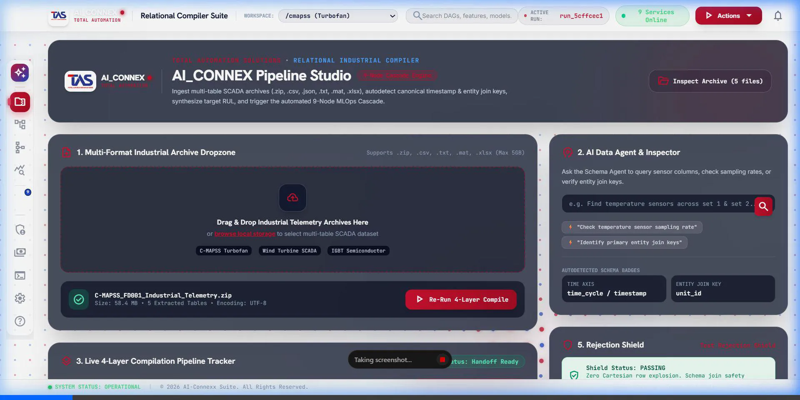
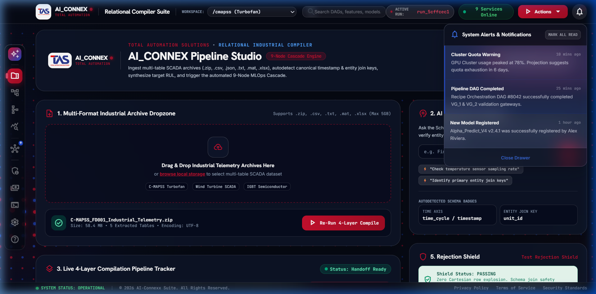

System Documentation Journal
Full 16-part technical compilation detailing functional operations, microservices layout, cloud systems, and machine learning gates.
Table of Contents
- DOC-001: AI-CONNEXX OVERVIEW
- DOC-002: SYSTEM ARCHITECTURE
- DOC-003: CLOUD ARCHITECTURE
- DOC-004: USER JOURNEY OVERVIEW
- DOC-005: COMPILER
- DOC-006: DATASET PROFILER
- DOC-007: DAG
- DOC-008: RECIPE ORCHESTRATOR
- DOC-009: PREPARE
- DOC-010: FEATURE ENGINEER
- DOC-011: SPLIT, TRAIN & EVALUATE
- DOC-012: VALIDATION GATEWAY 1 (VG-1)
- DOC-013: VALIDATION GATEWAY 2 (VG-2)
- DOC-014: DEPLOYMENT
- DOC-015: MONITORING
- DOC-016: AGENTS
Alphabetical Index
Visual Dashboard Proofs
Real-world screenshots demonstrating functional components, visual themes, state tracking widgets, and notifications panel slides.
Ingestion & Live Compiler View (Light Mode adaptation)

Warning Indicators and Sliding Panel Log Checks

AI-CONNEXX OVERVIEW
High-level overview of the AI-CONNEXX machine learning workflow studio for prognostic metrics.
Process Flow Chart
Subsystem Logic
AI-CONNEXX is a Total Automation Solution (TAS) machine learning workflow studio specifically engineered for industrial diagnostic and prognostic telemetry streams. Rather than relying on simple static formulas, the platform allows domain experts to upload multi-table archives and build robust, production-grade estimators automatically.
At its core, the platform maps a complete data science workflow into a structured, 6-stage Directed Acyclic Graph (DAG) pipeline:
- PREPARE (Step 1): Imputes missing values, normalizes scale, and encodes categorical columns.
- FEATURE_ENG (Step 2): Generates window statistics, differences, lags, interaction terms, or performs Principal Component Analysis (PCA).
- SPLIT (Step 3): Partitions the dataset using sequential time-series or random row splitting protocols.
- TRAIN (Step 4): Initiates asynchronous hyperparameter optimization (HPO) models.
- EVAL (Step 5): Computes regression/anomaly scorecards and validates model quality.
- DEPLOY (Step 6): Registers and hosts estimators via active REST inference endpoints.
By segregating these stages into independent microservice APIs, the system prevents compute-heavy actions from blocking user dashboard interactions. All execution logs, metrics, and intermediate datasets are serialized in a central workspace, providing full diagnostic traceability.
Source Code Example
SYSTEM ARCHITECTURE
Detailed look into the 9 microservices running independently in the studio.
Process Flow Chart
Subsystem Logic
The AI-CONNEXX platform follows a decoupled, microservice-based architecture to isolate execution dependencies. Training ML estimators and running hyperparameter searches are computationally intensive tasks that can saturate system memory and CPU. Therefore, each pipeline stage is deployed as an independent REST service communicating over specific ports:
- Dataset Profiler: Port 8000 — Processes raw uploads and recommends ML tasks.
- DAG Orchestrator: Port 8001 — Orchestrates step sequences and processes live inferences.
- Recipe Orchestrator: Port 8002 — Compiles user specifications into execution manifests.
- Prepare API: Port 8003 — Runs scalers, encoders, and imputers.
- Feature Engineering API: Port 8004 — Generates rolling features, lags, or PCA projections.
- Split API: Port 8005 — Creates train/validation partitions.
- Train API: Port 8006 — Runs background model fitting and hyperparameter sweeps.
- Evaluate API: Port 8007 — Computes metrics and latency gateways.
- Deploy API: Port 8008 — Serializes approved models to the deployment registry.
A critical environment setting injected during service startup is OPENBLAS_NUM_THREADS=1 (along with MKL_NUM_THREADS=1 and NUMEXPR_NUM_THREADS=1). This restricts internal linear algebra operations in NumPy and SciPy to a single thread per worker, preventing thread-clash CPU starvation and keeping endpoints responsive during HPO runs.
Source Code Example
CLOUD ARCHITECTURE
Deployment schema for scale, containers, object stores, and database integrations.
Process Flow Chart
Subsystem Logic
For large-scale enterprise deployments, AI-CONNEXX is designed to run in cloud Kubernetes (EKS, GKE, or AKS) clusters. Each microservice is containerized via a multi-stage, slim Dockerfile using python:3.10-slim to minimize image footprints and deployment delays.
The network topology relies on an API Ingress Controller (such as Traefik or AWS Application Load Balancer) that intercepts external HTTP requests and routes them to the corresponding cluster services based on path rules (e.g., /api/v1/profile/* -> profiler-service:8000).
To support shared file exchange between steps, a persistent storage layer is mounted:
- Shared Volume (PVC/EFS): Mounted at
/app/workspace_dataon all service pods. This volume acts as a high-throughput cache for compiled CSV segments. - Object Registry (S3/MinIO): Acts as the cold-storage model registry, backing up approved serialized model estimators and dataset cards.
Source Code Example
USER JOURNEY OVERVIEW
Walkthrough of how the user uploads files, runs the pipeline, and tests predictions.
Process Flow Chart
Subsystem Logic
The AI-CONNEXX UI is built with React and styled using a premium frosted-glass design. The user journey follows a strict, logical pipeline:
- Upload: The user drags a multi-table ZIP, an Excel sheet, or a JSON file onto the upload zone.
- Compile & Verify: The backend compiler unpacks files, normalizes names, aligns timestamps, and triggers the Relational Ingestion engine to flatten data.
- Configure: The user reviews statistics (column datatypes, skew, anomalies) and selects an execution DAG ID (e.g. classification DAG_001, regression DAG_283).
- Run Pipeline: The user launches the orchestrator and monitors step execution progress lights in real-time.
- Test Endpoint: Once validation gates approve the model, the user runs test inputs directly inside a form widget to fetch live inference predictions.
Source Code Example
COMPILER
Inner workings of the multi-format Ingestion & Relational Compiler Engine.
Process Flow Chart
Subsystem Logic
The relational compiler, located in the aiconnex_zip_compiler package, serves as the ingestion engine. It translates raw multi-table ZIP uploads into machine learning ready flat tables across 4 core layers:
- Layer 1 (Discovery): Scans the zip directory, analyzes column names, and maps tables to roles (Fact or Dimension) using regex filters. The largest high-cardinality table is designated as the primary Fact table, while background configuration tables are classified as Dimensions.
- Layer 2 (Schema Mapping): Standardizes columns to lowercase, parses dates, and maps timezones to a unified format.
- Layer 3 (Relational Join): Executes left-outer index joins on composite keys (e.g.
date_time+plant_id). - Layer 4 (Handoff): Generates the combined CSV, dataset JSON cards, and schema descriptions.
To prevent memory crashes from bad join keys, the Relational Joiner implements a Cartesian Guard Check. If the merged output size exceeds 1.5x the initial Fact table row count, the engine raises a warning and falls back to a row-aligned index join.
Source Code Example
DATASET PROFILER
Computes dataset statistics and automates target family detection.
Process Flow Chart
Subsystem Logic
Located in services/1_dataset_profiler/, the Dataset Profiler automatically analyzes flattened files and generates statistical tables. The profiling module computes standard statistics including min, max, mean, standard deviation, skewness, null percentages, and unique value counts.
It also incorporates target family detection heuristics (detector.py):
- Regression: Triggered if the target column contains numerical floats and has high cardinality (nunique > 20). Recommended for predicting continuous variables like sensor metrics or RUL.
- Classification: Triggered if the target column has low cardinality (nunique <= 10) or text content. Recommended for predicting failure states or categorical variables.
- Anomaly Detection: Recommended if no target column is provided or when classification labels are highly unbalanced.
Source Code Example
DAG
Resolves node connections and directs execution flows.
Process Flow Chart
Subsystem Logic
Located in services/2_dag/, this module acts as the orchestrator. It manages the sequential pipeline execution by calling microservices in order: PREPARE -> FEATURE_ENG -> SPLIT -> TRAIN -> EVAL -> DEPLOY.
The orchestrator contains a state machine that tracks pipeline progress, logs step durations, captures stdout/stderr logs, and stores intermediate results inside the run manifest.
In addition, the orchestrator generates a graphical tree mapping input nodes, condition evaluators, and step outcomes. This configuration is returned as JSON via the /api/v1/plots/dag_tree/{dag_id} route to render active pipeline paths on the UI.
Source Code Example
RECIPE ORCHESTRATOR
Compiles step specifications into serialized manifest recipes.
Process Flow Chart
Subsystem Logic
The Recipe Orchestrator (running on Port 8002 in services/3_recipe_orchestrator/) translates abstract DAG IDs into structured execution manifests. When a DAG ID (such as DAG_283 or DAG_001) is triggered, this service loads the configurations from disk:
3_recipe_orchestrator/recipe/preparing/DAG_xxx.json: Configures missing value thresholds, imputers, and scalers.3_recipe_orchestrator/recipe/feature_engineering/DAG_xxx.json: Configures lag steps, window offsets, or PCA settings.3_recipe_orchestrator/recipe/splitting/DAG_xxx.json: Configures data partition percentages.3_recipe_orchestrator/recipe/training/DAG_xxx.json: Configures estimator selection and hyperparameter grids.
The compiler merges these recipes into a single configuration object (saved as meta3.json) which is reference-linked in subsequent API tasks.
Source Code Example
PREPARE
Details missing values imputation, standard scaling, and one-hot encoding operations.
Process Flow Chart
Subsystem Logic
Located in services/4_prepare/, the Prepare service executes data cleaning operations using scikit-learn preprocessing classes. It implements:
- Imputation: Replaces null values in numeric columns with the column
meanormedian. Categorical values are imputed with the most frequent label (mode) or a static constant. - Scaling: Scales numeric columns using standard scalers:
StandardScaler: Scales columns to zero mean and unit variance.MinMaxScaler: Binds column values between $[0, 1]$.
- Categorical Encoding: Applies one-hot encoding or ordinal mapping to prepare text features for estimators.
Source Code Example
FEATURE ENGINEER
Details rolling statistics generation, lag calculations, and sensor diff variables.
Process Flow Chart
Subsystem Logic
Located in services/5_feature_engineering/, this API implements two feature extraction branches based on the dataset topology:
- Temporal / Time-Series Branch: Built for time-series and sensor data. It generates rolling window features (rolling mean, rolling standard deviation over windows of 5 and 10), difference features (period-1 difference), and lags (1, 2, and 5 step delays). The generator sorts values by entity and timestamp prior to computation to avoid look-ahead leakage.
- Tabular Branch: Built for non-temporal records. It creates row-wise aggregates (row mean, row standard deviation), polynomial combinations (using
PolynomialFeatures(interaction_only=True)), Principal Component Analysis (PCA) projections, and appliesSelectKBestfeature selection to retain target-relevant variables.
Source Code Example
SPLIT, TRAIN & EVALUATE
Splitting logic, fitting models, and generating regression/classification scorecards.
Process Flow Chart
Subsystem Logic
The splitting, training, and evaluation steps are executed by separate services:
- Split (Port 8005): Partitions datasets into train and validation files. Supports sequential time splitting (for time-series data) and random row-based splitting.
- Train (Port 8006): Dispatches model training to background tasks to prevent HTTP connection timeouts. It queries the
aiconnex_mlpackage's HPO engine (RegressionTrainer/AnomalyTrainer) for grid searches. If the custom library is missing or errors, it falls back to standard scikit-learn models (HuberRegressor, ExtraTrees, GradientBoosting, SVC, KNeighbors, KMeans, Isolation Forest). - Evaluate (Port 8007): Scores predictions against validation targets, generating a scorecard mapping Mean Absolute Error (MAE), Root Mean Squared Error (RMSE), $R^2$, accuracy, precision, and recall.
Source Code Example
VALIDATION GATEWAY 1 (VG-1)
Ensures metric quality satisfies accuracy thresholds.
Process Flow Chart
Subsystem Logic
Validation Gateway 1 (VG-1), located in aiconnex_ml.shared.data.validation_gate_1, is a pre-training quality check. It audits training sets before training begins to avoid compute waste or silent failures:
- Zero Variance Check: Scans numeric columns and rejects datasets if any features have constant values.
- Target Leakage Check: Identifies columns with abnormally high correlations to the target, warning the user of potential leakage.
- Missing Value Check: Aborts execution if the target column contains null values or if features exceed a 50% missing value threshold.
- Imbalance Check: For classification tasks, warns if class proportions exceed 1:1000.
Source Code Example
VALIDATION GATEWAY 2 (VG-2)
Measures average inference latency to satisfy millisecond constraints.
Process Flow Chart
Subsystem Logic
Validation Gateway 2 (VG-2) is a post-training latency quality gate. It verifies that serialized models meet real-time production requirements. The gate loads the model pickle file, runs 100 consecutive predictions on sample inputs, and records latencies.
It verifies:
- Mean Inference Speed: Must remain below 50.0ms.
- P95 / P99 Latency Bounds: Ensures execution speed remains consistent without major bottlenecks.
Source Code Example
DEPLOYMENT
Details FastAPI predictor endpoints and serializer loading processes.
Process Flow Chart
Subsystem Logic
Located in services/9_deploy_monitor/, the Deploy service handles model staging. When a pipeline run passes all validation gates, the deployment endpoint:
- Resolves the dataset identifier prefix (e.g.
ds3for manufacturing data,ds4for anomaly datasets). - Parses the
algorithm_families_complete.xlsxspreadsheet to match the currentdag_idto itsFAMILY_ID. - Saves the model pickle file to the
final_modeldirectory using the name:{ds_number}_{family_id}_{dag_id}.pkl.
The runtime loading system caches these pickled estimators in memory for real-time predictions via FastAPI, minimizing file I/O latency.
Source Code Example
MONITORING
Tracks prediction latency, resource usage, and data drift over active streams.
Process Flow Chart
Subsystem Logic
Located in services/9_deploy_monitor/, the monitoring service tracks API request counts, prediction latency, and system resource metrics.
Additionally, it implements **Data Drift Monitoring** to ensure data distributions match training expectations. The system runs the **Kolmogorov-Smirnov (KS) test** on incoming numeric streams, comparing them to baseline distributions:
$$D = \sup_x |F_{\text{train}}(x) - F_{\text{live}}(x)|$$
If the KS $p$-value falls below a threshold ($0.05$), the system flags data drift, notifying operators that the model should be retrained.
Source Code Example
AGENTS
Describes the conversational AI Data Agent and interactive pipeline copilot.
Process Flow Chart
Subsystem Logic
The conversational AI Data Agent acts as an interactive copilot for the studio dashboard. It helps operators manage machine learning workflows through a chat interface.
The agent is integrated with the backend microservices, allowing it to:
- Fetch dataset profiles and schemas.
- Query active pipeline logs and status objects from the DAG Orchestrator.
- Explain failure reasons (such as compiler errors or validation gate warnings).